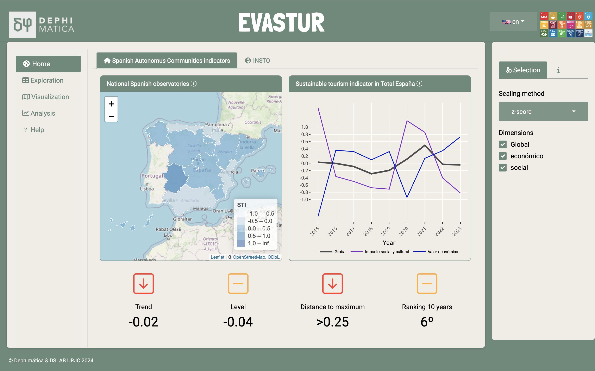
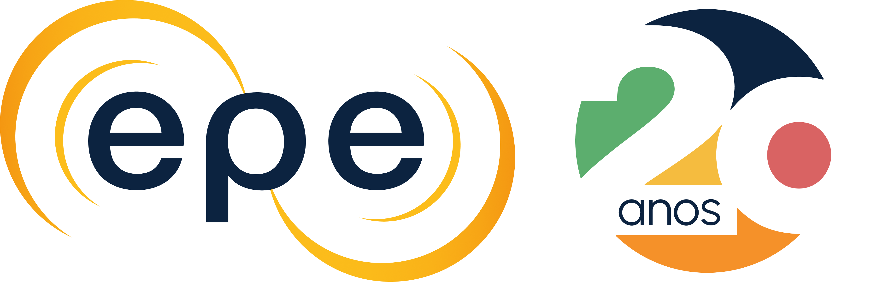
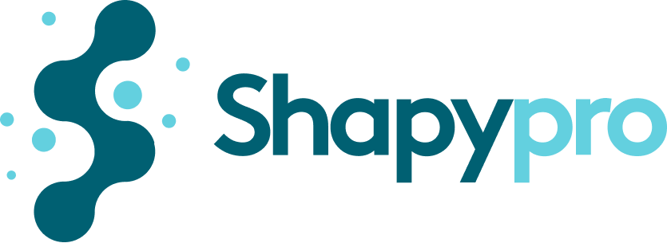

Cómo usamos R en el DSLAB: ETL, Dashboards, Modelos, y cosas que no imaginas
92ª Reunión Grupo de R de Madrid
Data Science Laboratory, Universidad Rey Juan Carlos
Contexto
DSLAB
DSLAB: Grupo de investigación en Fundamentos y Aplicaciones de la Ciencia de Datos
Investigación
Docencia
Proyectos de investigación (con entidades públicas y privadas)
Divulgación
Recursos
GRUPO DE INVESTIGACIÓN DE ALTO RENDIMIENTO EN FUNDAMENTOS Y APLICACIONES DE LA CIENCIA DE DATOS DE LA UNIVERSIDAD REY JUAN CARLOS / FOUNDATIONS AND APPLICATIONS OF DATA SCIENCE GROUP OF UNIVERSIDAD REY JUAN CARLOS
28 investigadores
Espacios de investigación
Servidores propios
Infraestructura URJC
Investigación
Artículos recientes
Proyectos de investigación: COVID
- COVID

Proyectos de investigación: Caderas
Predicción de la capacidad para deambulación al mes de fractura de cadera
Proyectos de investigación: DICYME
Dynamic Industrial Cyber Risk Modelling based on Evidence (DICYME) research project (CPP2021-009025)
Proyecto de colaboración público-privada con DeNexus TECH SL.
Prototipo dashboard (pendiente de publicar)
Conexión con MongoDB
App relacionada: CRAS
Docencia
Asignaturas en abierto
Aprendizaje automático: https://urjcdslab.github.io/AprendizajeAutomaticoI/
Inferencia estadística: https://urjcdslab.github.io/InferenciaEstadistica/
Grados/Master
- Matemáticas, Ciencia e Ingeniería de Datos, Biología, Ingeniería Industrial, Ingeniería de la Ciberseguridad, Inteligencia Artificial, Ingeniería Informática, Diseño y Desarrollo de Videojuegos, Máster Data Science, Máster en Dirección de Turismo Internacional, etc.
Seminarios
Primer dashboard en Shiny:
Gráficos interactivos en R:
Generación con R de tablas y gráficos listos para publicar https://emilopezcano.github.io/seminario_fcs_urjc_2024/
Libros CC
Algún otro inacabado, y otros un tanto obsoletos
Obra colectiva Fundamentos de ciencia de datos con R editada por Gema Fernández-Avilés y José María Montero.
Proyectos docentes
Proyecto de Innovación Educativa: DSEXAMS
Paquete de R: https://github.com/URJCDSLab/dsexams Presentación en EDULEARN 23
TFGs
Apps docentes
Transferencia - Casos de éxito
EVASTUR
Proyecto con la empresa Dephimática
Especializada en estadística pública
Capacity building en Ciencia de Datos
Sistema de indicadores de turismo sostenible: exploración, visualización, análisis
EVASTUR - Dashboard
🖥️ Live demo 🤞🏻
EPE Brasil
Weaving Connections: A Comprehensive Diagnosis of Access to and Use of Electricity and Essential Services by Low-Income Population (MRC- SP 0366)
Proyecto de transferencia con MRC Consultants and Advisors (Grupo Veolia)
ETL, Modelo de datos, visualización
Indicadores de pobreza energética (UCM)
Presentado en reunión del G20
OBEPE

Acknowledgements: 
🖥️ Live demo 🤞🏻
SHAPYPRO
- Empresa biotecnológica
- Proficiency Testing
- Asesoría en ciencia de datos, informes parcialmente automatizados.
- En proceso: paquete y aplicación shiny

📍ENAC ha concedido recientemente la primera acreditación a @SHAPYPRO como proveedor de ensayos de aptitud de eficacia biocida en productos antisépticos y desinfectantes químicos. Estos ensayos están destinados a la evaluación de los biocidas en base a su actividad (bactericida,… pic.twitter.com/T2WMrB3EWQ
— ENAC (@ENAC_acredita) October 14, 2024
IMASDE Agroalimentaria
TFG aprendizaje automático
Informes automatizados de I+D+i
Capacity building
AfCIOT - TiVA indicators
International Trade, Environmental and Employment Indicators
International and multidisciplinar team
Industry and product classification, gap estimation, policy simulation and visualisation
Key result: A shiny app for reporting, visualisation and policy simulation
Several important challenges for the multinational scope
AfCIOT - TiVA indicators

Acknowledgements: 


🖥️ Live demo 🤞🏻
Síagro - Animal production SPC
- CRO clinical and nutritional trials
- Shiny app for their customers as a value added service
- Important [productivity improvements]
- Simulation and parameterised reports


Smart Cities
Use cases for Tourism, Healthcare, and Infrastructures in Madrid Region
Coherent step-by-step apps for the use cases (load data - visualisation - modelling - getting results)
Some use cases with Shiny, other with Python or Power BI
Example: http://www.citizenlabhub.es/cu/55
Conclusiones y trabajo futuro
Conclusiones
R nos ayuda en gran diversidad de tareas
R, R markdown, quarto, shiny favorece y facilita su uso
Estamos listos para despliegues en producción, sin complejos
Trabajo futuro
Paquete de R asociado a Tesis doctoral
Más dashboard
Mejorar la generación de apuntes con R
Más proyectos con empresas
Más proyectos en organismos internacionales
Nueva tesis doctoral 😉
¡Gracias!
carmen.lancho@urjc.es
emilio.lopez@urjc.es
Slides: https://urjcdslab.github.io/rmadrid92
Preguntas

92ª Reunión Grupo de R de Madrid, 30 de octubre 2024